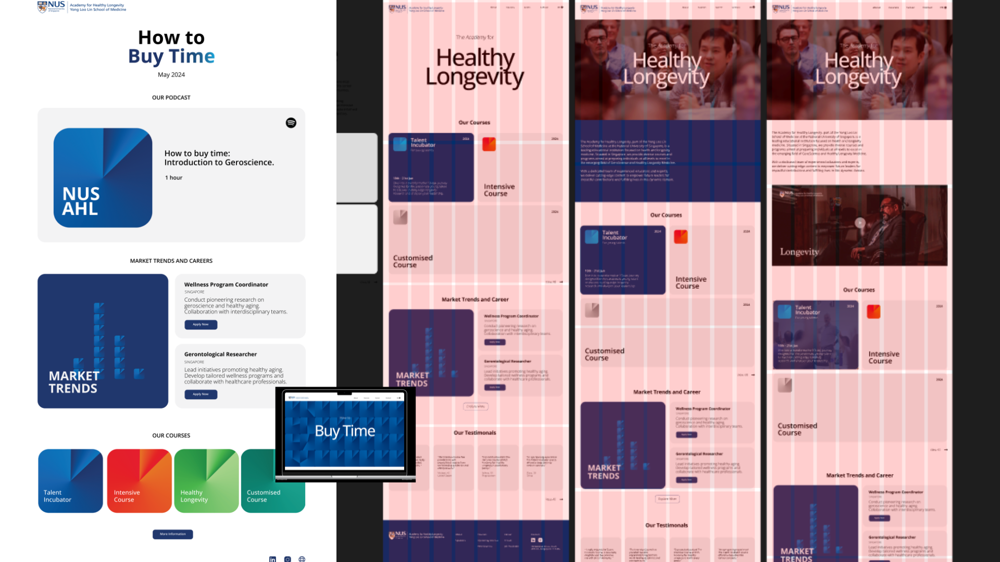
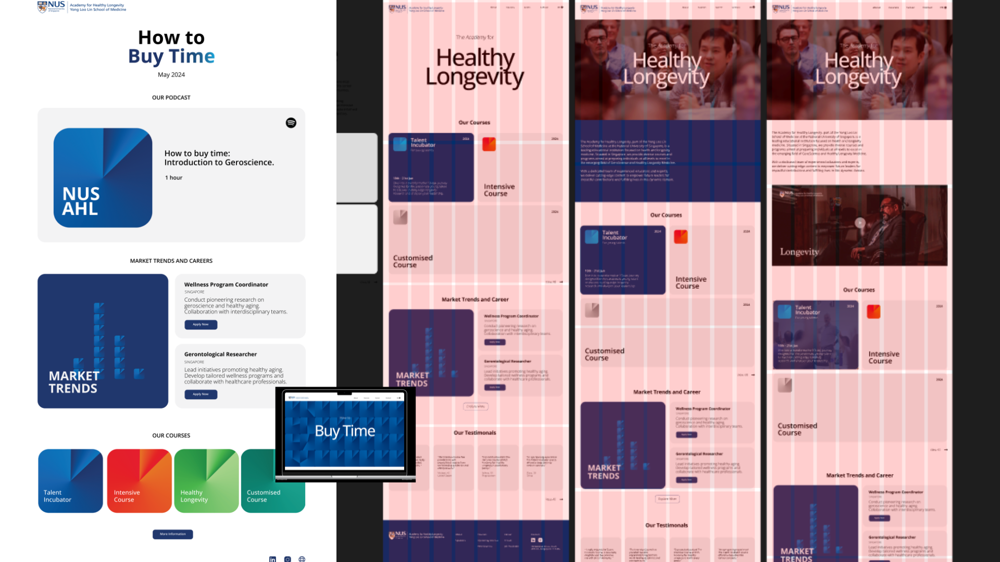

HOW TO BUY TIME
NUSAHL — CAMPAIGN
A winning academic project under Industry Studio Project & NUSAHL, How to Buy Time reframes longevity as an investment for working professionals.
Why This Project?
The idea emerged from a key insight: many young professionals trade health for productivity, only to wish they could reclaim that time later. This sparked the concept—what if you could ‘buy time’ now by investing in long-term wellbeing early?
Understanding Before Action
Longevity is often framed as an issue only relevant to the elderly. But younger individuals, especially in fast-paced industries, rarely see it as part of their current reality. Our goal was to shift that mindset—positioning longevity as a smart, future-focused lifestyle choice, like financial investing.
By redefining health maintenance as a proactive gain rather than a burden, How to Buy Time encourages a perspective that is aspirational, not fear-based—making wellness a valuable asset, not an obligation.


 
